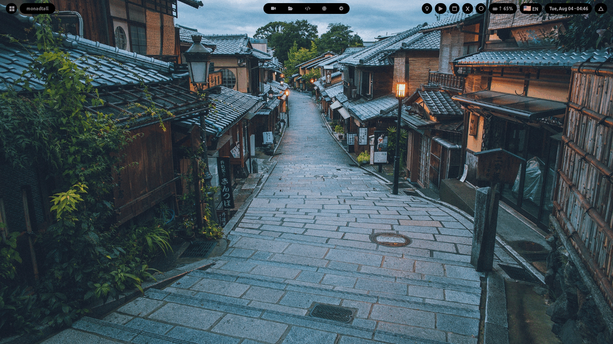

ATI-OS
One person's Arch Linux and qtile desktop, packaged as an install medium so a second machine can have the same one.

What you get
Every number here is counted out of this repository, not estimated.
- 22colour schemes. Picking one retints the bar, the terminal, the launcher, GTK and the browser at the same time.
- 46install modules run by default, each one reported as it passes. Two more are opt-in.
- ~20 minfrom booting the USB medium to a working desktop.
- 31AUR packages compiled into the medium in advance, so the install is not waiting on builds.
- qtiletiling window manager on X11. No display manager: you log in at
a TTY, then
letsgostarts the desktop.
Moving pictures
Real recordings of the running desktop.


What this is not
It is not a distribution. It is Arch Linux with one person's configuration stowed on top, plus an installer that does the stowing. There is no separate package repository to trust, no release schedule and no support.
- UEFI only. The USB installer refuses a machine that starts in legacy BIOS mode rather than half-installing it.
- Intel graphics is the only path anyone has watched work. The code handles AMD and NVIDIA too; neither has been run on real hardware.
- No HiDPI machine has been tested. The scaling arithmetic is there. Nobody has looked at a 4K screen running it.